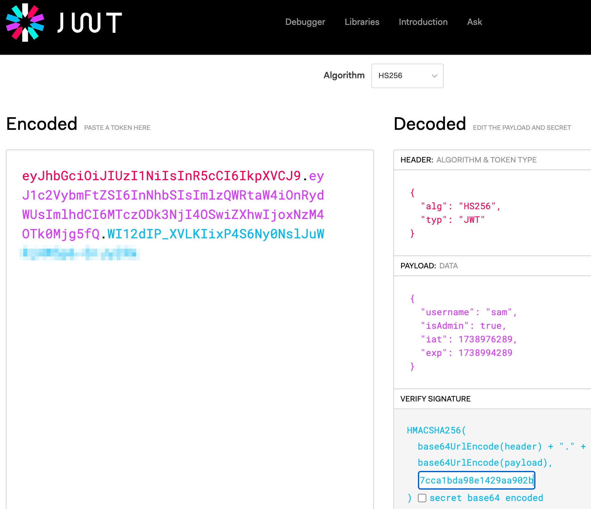

You may have heard about
/robots.txt resources.
You can read more about them
here.
In a new browser tab, try to go to the /robots.txt resource of this web app.
You can copy the URL from the address bar in this window and use it in a new tab. However, you'll want to delete the singleton / character and everything after it. Then add /robots.txt onto the end of what is remaining.
See if you can use what you learn there to obtain the secret text string used to sign JWTs for this app.
Onse you have it, go back to your jwt.io tab where you have set isAdmin to true and very carefully click in the editable field in the VERIFY SIGNATURE window.
First clear out ALL of the current text in that window.
Then paste in the secret text string. You should see something like this:

Now you are very close!
Copy the JWT from the left side of jwt.io and, as before, carefully update your cookie in the Developer Tools window using this tampered JWT.
If everything went well, you can now get the flag here:
/get-flag
It is possible, but unlikely, that your token will have expired if you took a long break somewhere during this process. If that happens, just start all over again from the beginning.
We hope this was a gentle introduction to JWTs. There are lots of resources online to learn more if you are interested.
Here is at least one
interesting article.